【undone】汽车C1证考试
汽车驾照C1证考试要考四科，即科目一、科目二、科目三和科目四。
科目一
考试时间
考试时长：45分钟
题目数量：100题
题型：全部为单选题或判断题
满分100分，90分及以上为合格
绝大多数考生实际只需10~20分钟就能完成
1. 标志
黄色三角形，是“注意”的意思。 不是警告。
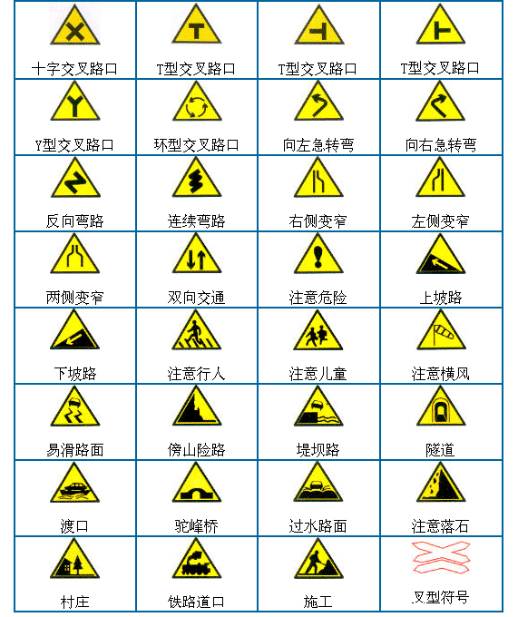
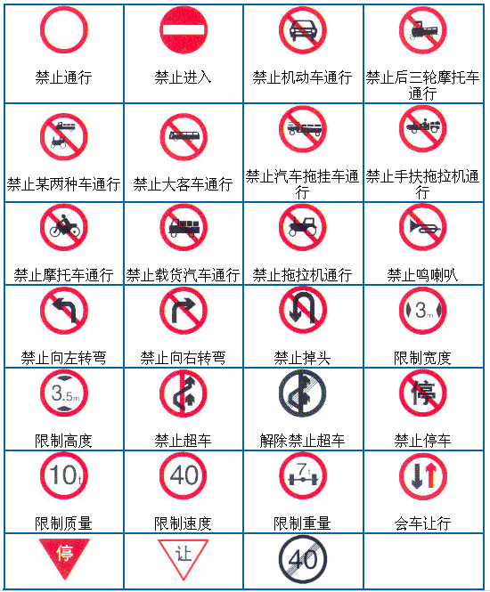
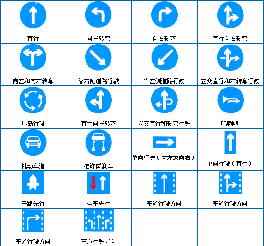
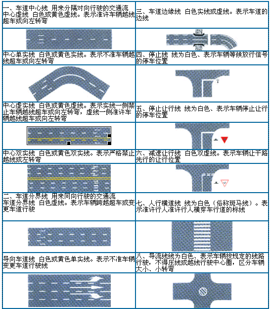
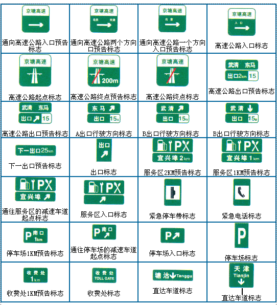
以上图标不全，资料大全可以参考 国家标准GB5768.2-2022《道路交通标志和标线》
下载链接： https://xxgk.mot.gov.cn/jigou/kjs/202006/P020200623760741738973.pdf
2. 机动车仪表盘
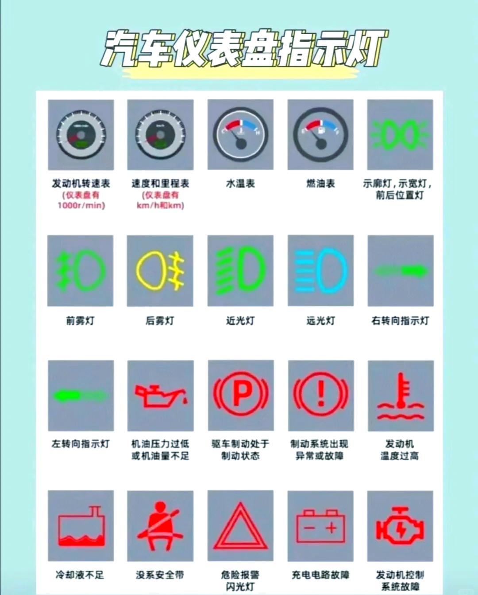
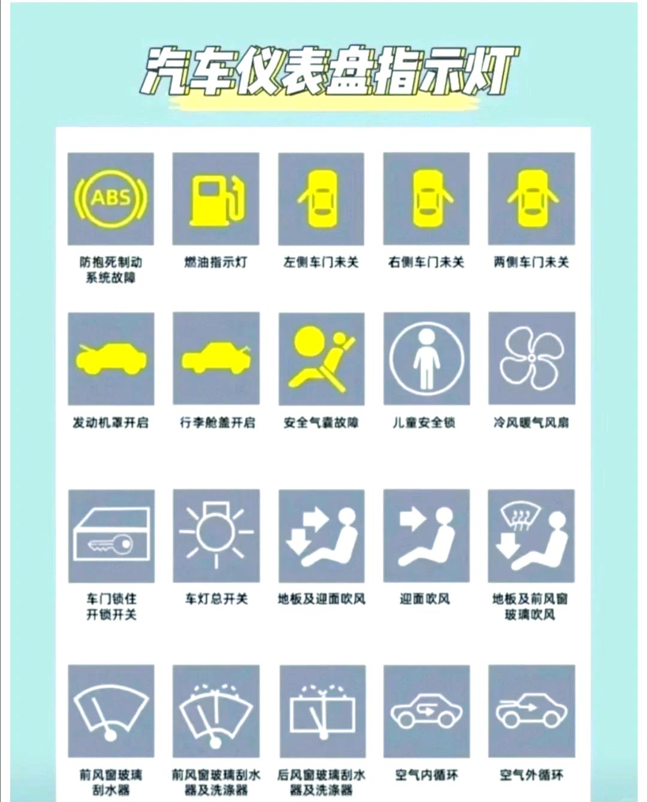
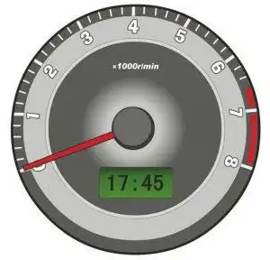
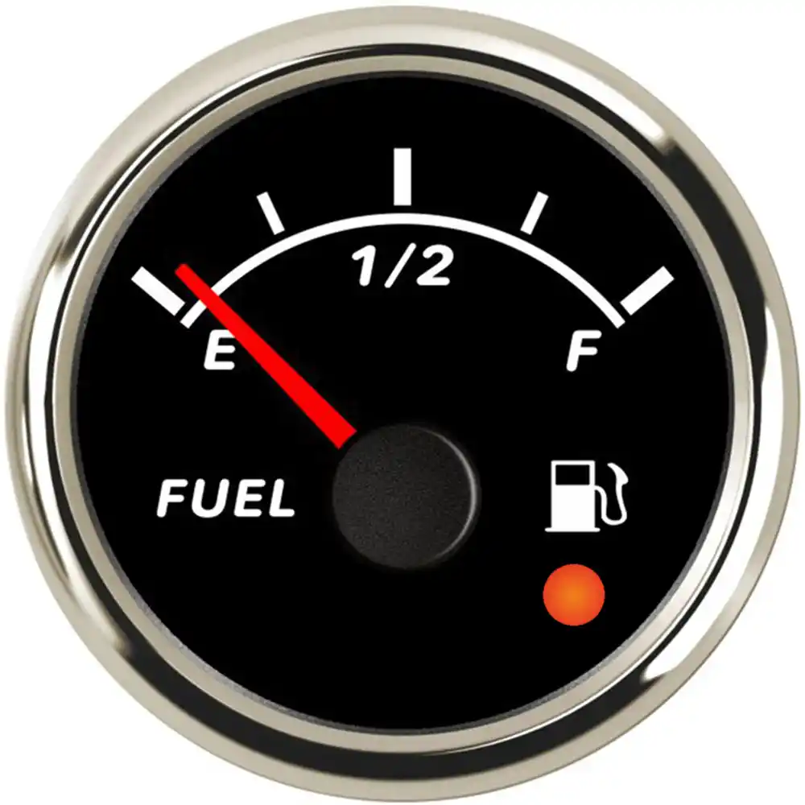
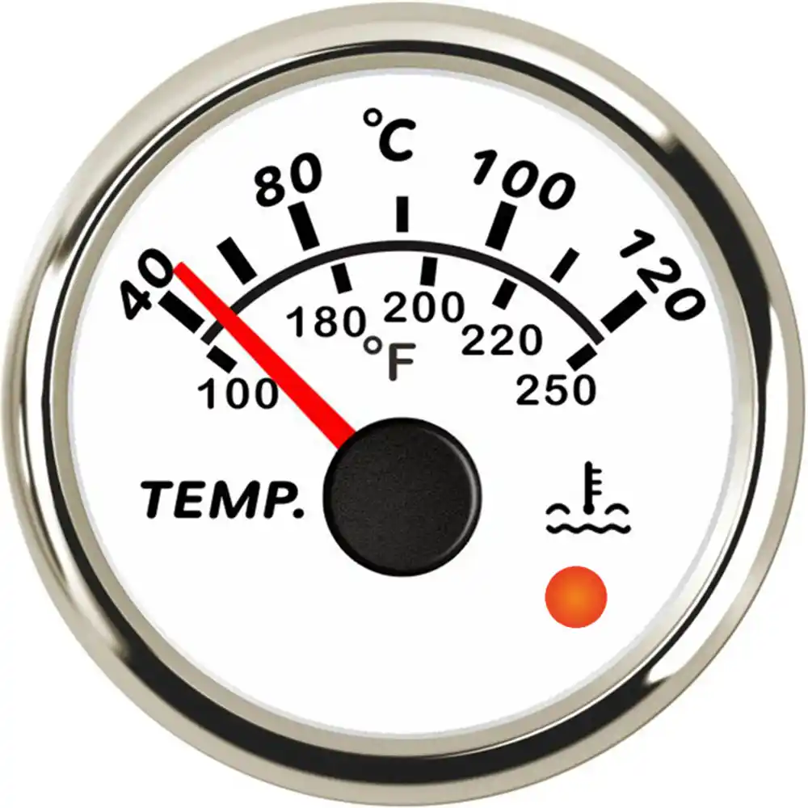
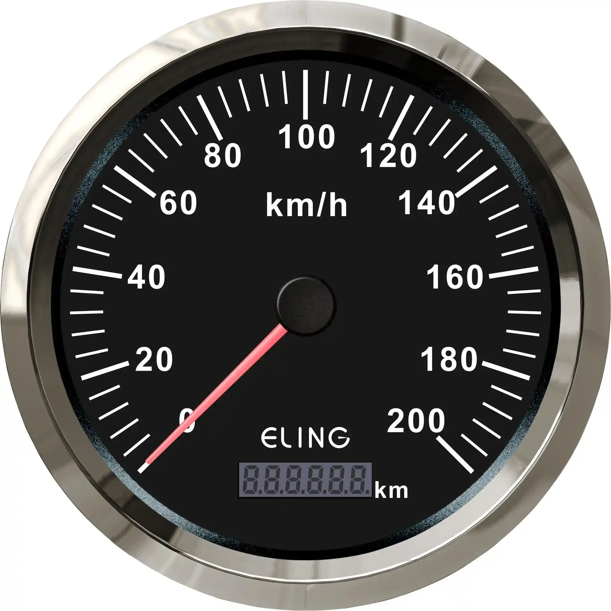
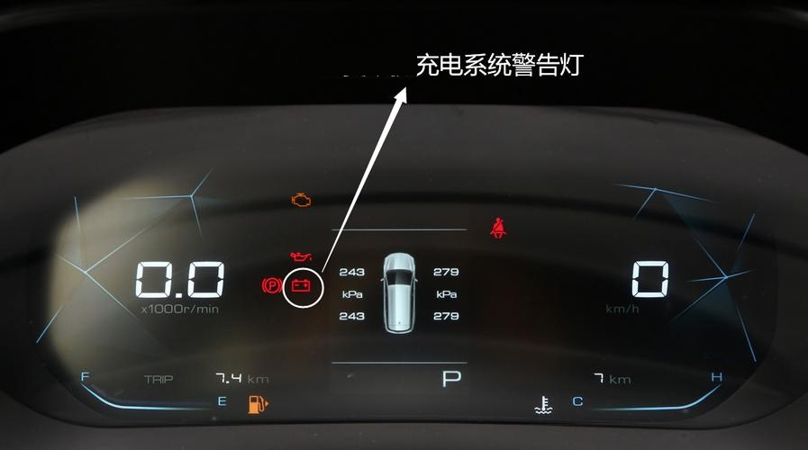
发动机机油压力过低，表示机油油量可能不足
前雾灯打开。 绿色朝左
后雾灯打开。 黄色朝右
口诀： 皇后。 黄色，后雾灯
油箱内燃油已经到最低液面
安全气囊处于故障状态
发动机控制系统故障
已开启前照灯近光
已开启前照灯远光
前后位置灯开启
驱动电机故障
动力蓄电池高温报警
动力蓄电池故障
系统故障
胎压故障警告
充电系统故障
冷风暖气风扇
冷却液不足
3. 踏板、旋转开关
踏板从左到右：
离合、刹车、油门
4. 驾驶规则
右转让左转，拐弯让直行
下坡车先走，上坡车后走
5. 惩罚： 扣分、吊销驾照、判刑
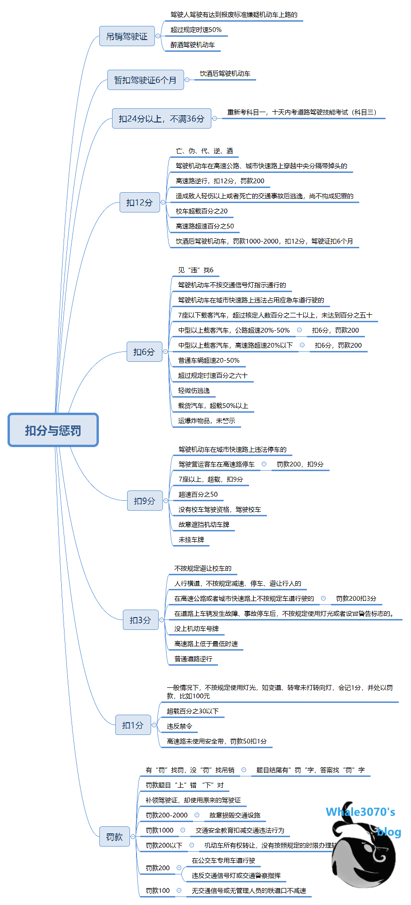
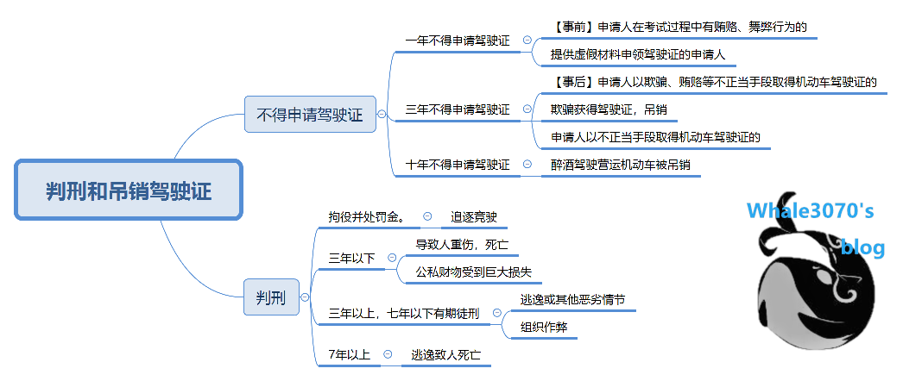
6. 年龄限制
机动车驾驶证与年龄限制
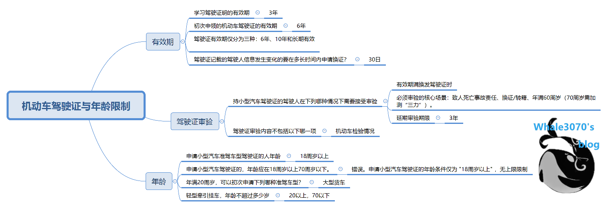
7. 限速与车距
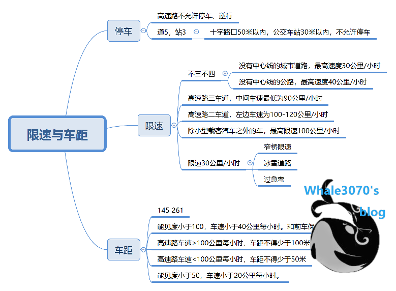
145 261
能见度小于100，车速小于40公里每小时。和前车保持50米以上的距离
能见度小于200，车速小于60公里每小时。和前车保持100米以上的距离
8. 术语
电动车指示灯
车轮抱死
“车轮抱死”是指：
车轮在车辆行驶中突然完全不转动，造成车辆失去转向和制动能力的现象。
🛑 常见于刹车时
当你急刹车或重踩刹车时，如果车辆没有ABS系统，可能导致车轮被刹车系统完全夹死不转，这就是“抱死”。
🔧 专业解释：
- 刹车系统通过刹车片压紧刹车盘，使车轮减速；
- 如果压力太大或速度太快，轮胎停止转动（但车仍惯性前行）；
- 结果：车在滑行但轮胎不转动 → 导致“抱死”。
⚠️ 抱死的危害：
| 危害 | 说明 |
|---|---|
| 🚗 方向失控 | 抱死会导致无法控制方向（前轮不转无法转向） |
| 🚧 制动距离变长 | 轮胎与地面滑行，摩擦力不稳定，反而更难停住 |
| 🌀 易打滑侧翻 | 特别是在湿滑、雪地、下坡等路面，极易侧滑 |
✅ 防止“抱死”的措施：
| 方法 | 说明 |
|---|---|
| ✅ 配备ABS系统 | ABS会自动“点刹”，防止车轮抱死 |
| ✅ 不要猛踩刹车 | 缓踩或点刹，特别是紧急情况更要稳住方向 |
| ✅ 熟练掌控离合 | 手动挡车辆下坡时合理配合刹车与离合可减少抱死风险 |
自适应巡航系统
车辆的自适应巡航系统（Adaptive Cruise Control，简称 ACC）是一种智能驾驶辅助功能，它能在你设定好车速的前提下，自动跟随前车、保持安全车距，并根据交通状况自动加减速。
🚘 自适应巡航系统的核心功能：
| 功能 | 描述 |
|---|---|
| 🎯 自动保持设定速度 | 类似传统定速巡航，车辆自动维持某个速度前进 |
| 🛑 自动检测前车距离 | 利用雷达/摄像头监测前方车辆位置与速度 |
| ↔️ 自动加减速或刹车 | 当前车减速，系统会自动减速或刹车；前车加速或变道，自动恢复原设定速度 |
| 🚗 跟车行驶 | 可以在堵车或高速行驶时，保持稳定跟车状态，减轻驾驶疲劳 |
🧠 工作原理：
- 车辆通过毫米波雷达或摄像头感知前方道路和车辆；
- 系统计算当前车距与安全距离；
- 如果车距变小，自动减速甚至制动；
- 前方无车时恢复设定速度，继续巡航。
✅ 适合的使用场景：
| 场景 | 优势 |
|---|---|
| 🛣️ 高速公路 | 自动维持车速 + 跟车，减轻长时间驾驶负担 |
| 🚗 轻度堵车 | 高级版ACC支持“0-30km/h”跟停再起步（Stop & Go） |
| 🚧 城市快速路 | 避免频繁加减速，提升驾驶舒适性与安全性 |
❗ 需要注意：
- ACC不是自动驾驶！你仍然需要手握方向盘、时刻监控路况。
- 雨雪、雾霾等天气会影响雷达/摄像头识别准确性。
- 有些车辆带全速域自适应巡航（可刹停至0），而有些只在30km/h以上工作。
📌 总结一句话：
自适应巡航 = “会自己加减速的定速巡航”，既省力又更安全，但不能完全替代人类驾驶。
科目二
C1驾驶证的科目二考试（又称场地驾驶技能考试），主要考察你对车辆的基本操控能力，包括方向、离合、倒车、刹车、空间感等。
🚗 科目二必考项目（共 5 项）
序号 项目名称 简要说明
1️⃣ 倒车入库 倒车将车辆准确停入车位，不能压线、超时或中途停车
2️⃣ 侧方停车 模拟路边停车，前进后退把车停进“路边车位”
3️⃣ 曲线行驶（S弯） 不停车、不压线地驶过S形弯道
4️⃣ 坡道定点停车与起步 在上坡定点停车，30cm内停稳，起步不溜车、不熄火
5️⃣ 直角转弯 模拟90°直角弯，不能压线或停车
倒库
a.右倒车入库：
右出库：从出库开始直行，观察左侧窗户后直线与左侧黄直线平行时，迅速把方向盘右打到底，右转弯，当车身摆正且肩膀与左侧横黄线平行时，踩刹车停止前行。右出库完成。
右倒库：换倒车，倒车看左后视镜，左后视镜盖过左侧横黄线3/2位置时，方向盘右打到底。车子后退，从右后视镜观察车子后窗位置与车库右前直角距离。若较宽，不需要往左打，若较窄，需要往左打方向盘。右侧后车轮不压右侧车库线后立马转向左方，观察左方后直角，后直角一漏出需要迅速回正。观察后方左右距离，哪边宽往哪调方向盘，微调车身使之不要压线。后车轮在后两条黄线或车库前虚线在后视镜下方时停止倒车。
b.左倒车入库：
直行出，观察左前窗，窗快到库前虚线时，表示车身基本已出库，向左打一圈加90度，一直左转弯行驶，方向盘稳住不动。观察左前窗夸过黄虚线之前窗一半时停止前进。左出库完成。
左倒库：换到档，不动方向盘一直倒车，观察左车库前虚线车轮和前直角距离，若很宽，需要再左打到底，若比较窄，需要向右回一定角度。当左后车轮进车库黄虚线，观察右后直角，直角一漏出，迅速回正。依据车库后黄线距离宽窄调整车身。
侧方位停车
车整体行驶至右侧库前，车后身至少在侧车库前一米。
换倒挡，行驶，观察右后视镜，当车库外前直角在后视镜下方时，迅速右打到底，观察左后视镜，目的是让车身和车库成45度，当车库后右直角漏出时，迅速回正，继续后退，目的是让车进入车库，观察右后车轮进入虚线时，迅速左打到底，观察前方，当对直车库左竖直线，同时观察左右看车是否都已进库停止。
出库时先换前进档，打左转向灯保持三秒后，向前行驶，观察右雨刮与右前方黄实线相交时，迅速回正，三秒后迅速向右打到底。
观察方向盘正前方，找准车身直行标志物迅速回正，行驶一两米。
注意事项：
a.整个过程除了停车换挡其他时间都要保证车在行驶，行驶过程中车不能停止超过2秒；
b.随时控制好离合器，让车速足够慢，给自己足够反应时间；
c.需要调整方向盘时，需要迅速果断，准确；
d.黄线均不能压；
坡位定点【C2不考这个项目】
离合刹车同时踩住，满送离合，送到车子开始震动，再松刹车。方向盘对准车前白色箭头，左后视镜对准黄线，停车，拉手刹放手刹，先慢松离合车子振动后，再松刹车，下坡时左脚离合踩到底，右脚轻踩刹车，完全下坡后停车
注意事项：
a.车身右侧与右侧黄色实线的距离大致为30cm，不能超过50cm，否则直接扣100分
b.前车轮刚好压住上坡后的第一条横虚线即表示到达的破点正确
直角转弯
往前直走，打左转向灯，方向盘对准白点，左后视镜与黄线平行，往左打死，右边小后视镜看左轮不压线，回正方向盘
往左打死，回正（压住前面黄线没有关系），往前直走
曲线行驶
从车盖右边开始看，车盖右边剩余3/4位置与右边黄实线相交时，方向盘往左打一圈，车盖最左侧与右边黄实线相交时，往左再加90度；随着车子移动，车子左车盖与左边黄实线相交时，回正方向盘；
从车盖左边开始看，车盖左边剩余3/4位置与左边黄实线相交时，方向盘往右打一圈，车盖最右侧与左边黄实线相交时，往右再加90度；随着车子移动，车子右车盖与右边黄实线相交时，回正方向盘。
个人认为科目二最难的是坡位定点，这个项目挂科的人也是最多的。需要同时注意右侧边距、车子上坡起步时不能后溜、车子前轮胎需要压在第一条黄线上。
科目三
科目三一共有十四个项目，模拟夜间灯光、起步、靠边停车、路口左转、路口右转、变更车道、超车、直线行驶、掉头、路口直行、会车、人行横道、学校区域、公交车站。
模拟夜间灯光
a. 请开启前照灯：打开前照灯
b. 夜间在路边临时停车：示廓灯+危险警示灯
c. 夜间在无照明、照明不良的道路行驶：远光灯
d. 夜间通过人行横道：远近灯光交替
e. 夜间与机动车会车：远近灯光交替
f. 夜间通过无信号灯路口：远近灯光交替
g. 夜间在有路灯照明良好的道路行驶：远近灯光交替
h. 夜间通过急弯、坡路、拱桥：远近灯光交替
i. 夜间通过没有交通信号灯控制的路口：远近灯光交替
j. 夜间超车：远近灯光交替
起步
听到语音提示后，先打左转向灯，踩住离合和刹车，挂一档，放手刹。然后松刹车，再慢松离合。车子就开始起步了。
靠边停车
打右转向灯，将车身摆正，车身与右侧黄实线距离保持30cm以内（30cm＜距离≤50cm，扣10分；距离＞5cm，扣100分），听到靠边停车语音提示之后，踩住刹车，踩住离合，挂空挡，拉手刹。
路口左转（右转）
提前打好左（右）转向灯，注意不压实线。语音提示后，需进行点刹操作，转向灯保持3秒后再进行转弯。
变更车道
点刹，提前打好左（右）转向灯，语音提示后，转向灯保持3秒后再开始进行变道。
超车
提前打好左转向灯，听到超车语音提示后，需进行点刹操作，转向灯保持3秒后再开始进行超车；超车到左车道后，打好右转向灯，听到驶回原车道后，转向灯保持3秒后再开始向右变道。
直线行驶
在直线行驶项目开始前，将车身摆正且位于正中间车道，避免因过于偏向两侧而压线。
听到语音提示直线行驶后，以方向盘中间最高点触发，双眼一直目视前方，能够看多远就尽量看多远，看的越远，车身越正。
在行驶过程中，可能会因为道路等方面原因，车子会出现微小的偏移，此时需要微调方向盘，微调幅度大概2-3度，切忌不可幅度过大，容易导致车身左右偏移30cm。
掉头
提前打好左（右）转向灯，注意不压实线。语音提示后，需进行点刹操作，转向灯保持3秒后再进行掉头。如遇红灯，需挂一档停车等待，等到绿灯后，半松离合继续行驶3秒后，再完全松开离合行驶（这样控制离合是避免车子熄火）。
路口直行
听到语音提示后，需进行点刹操作。
会车
听到语音提示后，需进行点刹操作。
人行横道
无语音提示，当车头与站牌重合时，进行点刹操作。速度不能超过20码。
学校区域
无语音提示，当车头与站牌重合时，进行点刹操作。速度不能超过30码。
公交车站
无语音提示，当车头与站牌重合时，进行点刹操作。速度不能超过20码。
注意事项：
① 全程1档连续行驶不能超过150m，全程2档连续行驶不能超过300m，3挡不限制，全程必须上一次4挡；
补充：1挡，20码以内；2档，20码-30码；3档，25码-35码；4档，35码-40码
② 档位必须跟速度相匹配，否则直接每次扣10分；
③ 科目三所有语音播报项目都不能提前操作，否则系统感应不到，直接挂掉；
④ 只要是变更车道就必须打转向灯；
⑤ 超车、直线行驶遇到有车子阻挡时，可直接停车等待，如果直接变道，系统将无法感应，直接挂掉。
只有我在的驾校需要注意的规则
调左后视镜，左边一半天一半地。
右边三分之一天，三分之二地。路况良好，20码-30码。
除此之外，20码以下，考试的时候要等直行红绿灯。转向不需要等红绿灯。靠边停车的时候要一把停好，停车挪动一次扣10分。
P挡，手刹，熄火，安全带。 快速下车。遇到花坛要先转到快车道。
选好车道再给油门，留出时间。
在学校门口要转到慢车道，转弯走到“转”字再转。
科目四
在**科目三理论考试（安全文明驾驶常识）**中，也叫“科目三安全文明驾驶常识”或“科目四”，考试规则如下：
✅ 考试题型与题量：
共50道题
- 判断题：判断正误（对/错）
- 单选题或多选题（以单选为主）
✅ 合格标准：
满分：100分
及格线：90分
- 也就是说：答对45题（90分）或以上算合格。
- 答错5题以内通过（每题2分）。
📌 总结：
| 项目 | 要求 |
|---|---|
| 总题数 | 50题 |
| 每题分值 | 2分 |
| 及格标准 | 90分（答对45题） |
| 答错上限 | 最多错5题 |
侧滑
机动车在泥泞路段后轮发生侧滑时，要将转向盘向侧滑的相反方向缓转修正。为什么是错误的
这是一个常见的科目一判断题，题干是：
“机动车在泥泞路段后轮发生侧滑时，要将转向盘向侧滑的相反方向缓转修正。”
正确答案是：错误。
✅ 正确做法是：
当车辆发生后轮侧滑时，应将转向盘朝侧滑的同一方向**转动（也叫“顺向转向”）以修正方向。
❓为什么“向相反方向转”是错误的？
原因解析如下：
后轮侧滑的特点：
- 后轮发生侧滑时，车尾会向一侧摆动，整车出现“甩尾”现象。
- 如果不及时处理，车辆可能会旋转甚至侧翻。
正确原理：顺着车尾滑动方向打方向盘（顺向转向）
- 这样做可以让前轮重新与后轮保持同一朝向，使车辆重新获得抓地力，车身回正。
- 比如：车尾向左滑 → 应该把方向盘向左打。
错误做法的后果：
- 如果你把方向盘朝相反方向打（车尾滑左你打右），前后轮角度差更大，加剧侧滑甚至导致车辆失控。
🧠 通俗记忆法：
“车尾往哪儿滑，方向往哪儿打。”
这条原则适用于：冰雪、泥泞等低附着路面下的后轮侧滑情况。
雾灯
这是科目一/科目四的常考知识点，我们来详细、简单地解答：
✅ 一、雾天开雾灯的作用是什么？
雾灯的作用：
- 增强车辆在雾天、雨天、雪天等低能见度环境中的可见性。
- 让自己看得清路（前雾灯）；
- 也让别人能看见你（前后雾灯）。
雾天能见度差，普通车灯光线被雾气折射、散射，看不远或反而晃眼。雾灯的光线穿透力强、光束短而宽，能在雾中更有效地穿透水汽，让你的车在100米左右距离内都能被看到，提高行车安全。
✅ 二、雾灯与近光灯、远光灯有何不同？
| 灯光类型 | 安装位置 | 作用 | 光线特点 | 使用场景 |
|---|---|---|---|---|
| 近光灯 | 前方、灯组内 | 照亮近距离路面，不晃对面车辆 | 光线向下，照射距离中等 | 夜间行车、大雨天、隧道等 |
| 远光灯 | 前方、灯组内 | 照亮远距离路面 | 光线直射、照射远、易晃眼 | 无对向来车或照明不足时使用 |
| 前雾灯 | 前杠低处 | 穿透雾气，照亮近前方 | 光线散、穿透强，照地面 | 雾天、雨天、雪天 |
| 后雾灯 | 后杠两侧或中间 | 提高车辆被后车发现的概率 | 非常亮，红色光，穿透强 | 雾天、雨雪天，易被追尾路况 |
🚫 注意事项：
- 不能用远光灯穿雾：因为雾会反射光线，远光灯会把光线反射回来，反而让你什么也看不见。
- 不能滥用雾灯：雾灯很亮，在能见度正常的情况下使用会晃到别人眼睛，属于违法行为。
🧠 考试小口诀：
“雾天行车开雾灯，能见不好别远光。近光+雾灯最保险，后雾让人看得见。”